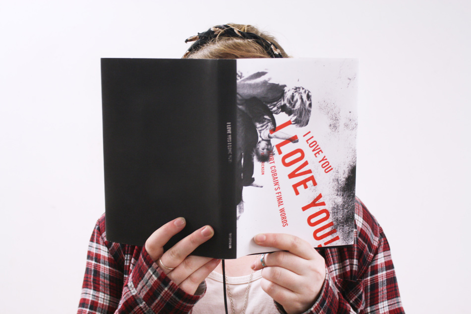
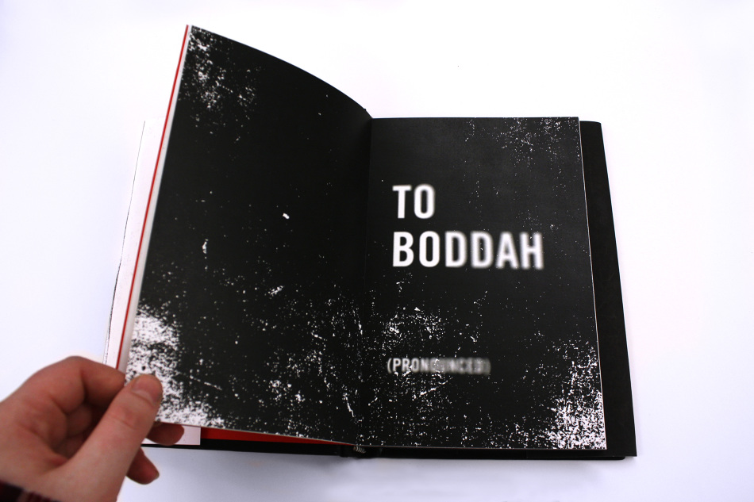
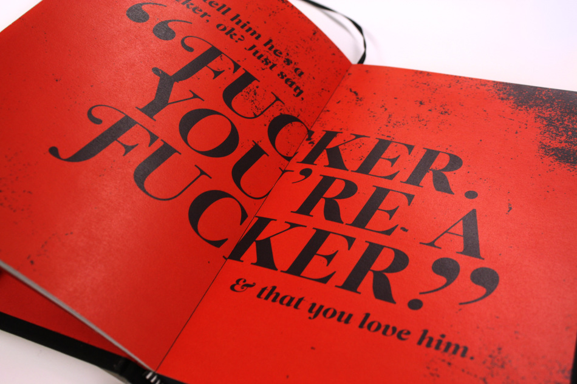
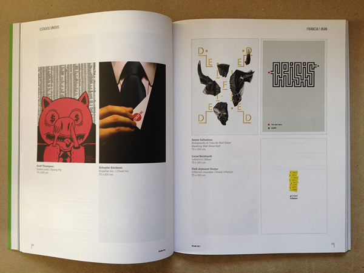
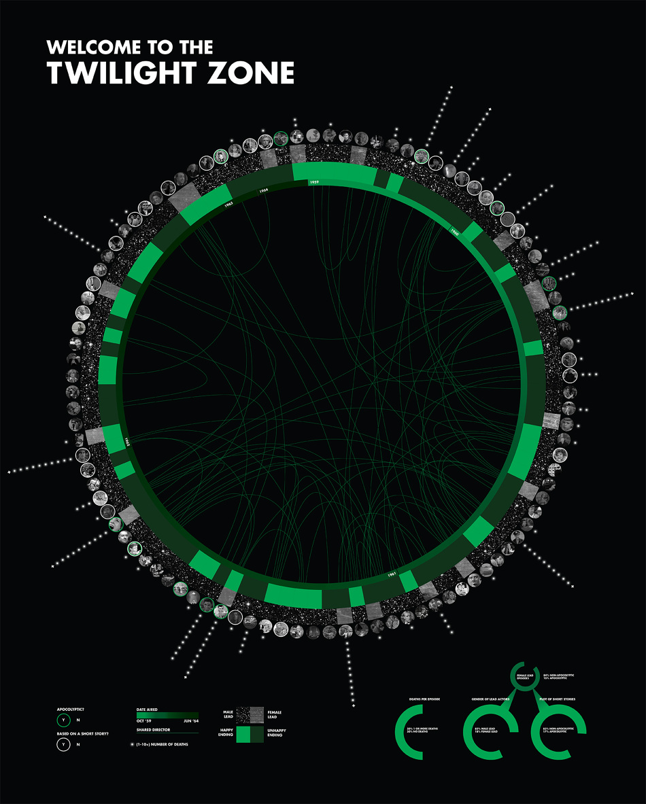
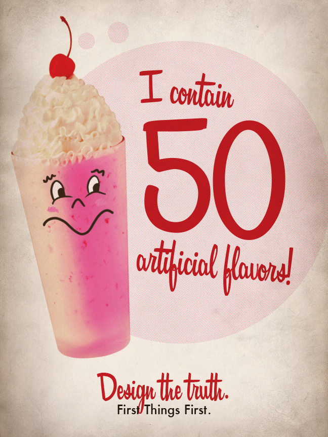
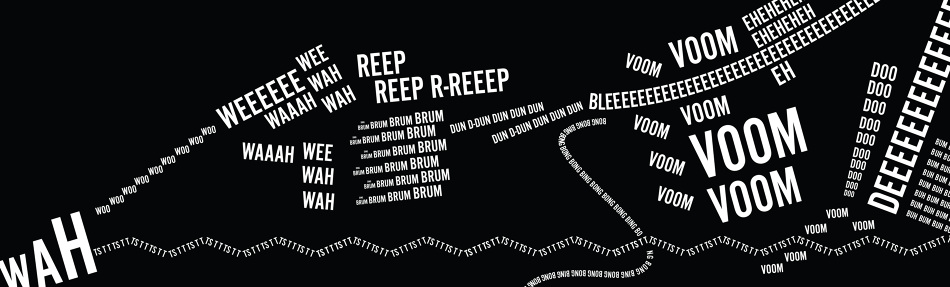
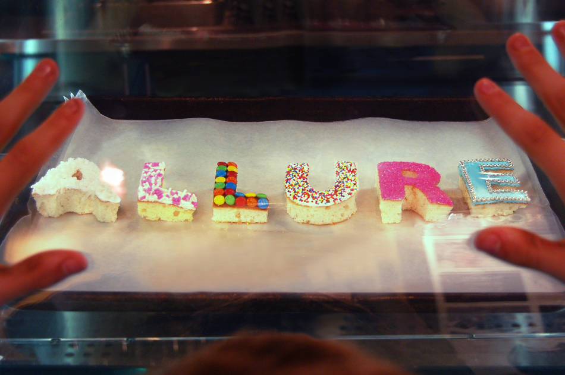

Sky Erickson: Designer
Schuyler (Sky) Erickson is a 21 year old graphic design student at Massachusetts College of Art and Design, who has slowly allowed design and typography to control her life. More about my cool life will go here.
I Love You, I Love You!
I was asked to create a book using any letter accompanied by a secondary/tertiary source. My book uses ex-Nirvana member Kurt Cobain's suicide note, as well as his wife, Courtney Love's commentary on the note played at his public vigil. I also used a coping guide distributed by the Defense Centers of Excellence for Psychological Health and Traumatic Brain Injury for those who have lost loved ones to suicide. The beginning of Courtney Love's commentary starts with "He always said he was gonna outlive everybody and be 120." Because of this, I used 120 pages in my book. 27 content pages (the age of Cobain at his death), and 93 blank, black pages. The rest of the back matter of the book, including end pages and book jacket, are black as well.



Cheat Inc.
I was asked to create a poster based on the current global financial crisis. I chose to expose the lies that are used in large companies and those who run them. This poster was chosen to be displayed in the 2013 Bienal del Cartel Bolivia.

Welcome to the Twilight Zone
I was asked to create a set of data based on 100 things. I chose episodes of the Twilight Zone (one of my favorite shows) and created a 7 category system in order to get a set of data which I then transformed into an information graphic.

First Things First
I was asked to read the First Things First manifesto, form an opinion, and create a 2-poster series based on my opinion. I decided to focus on the fast food industry and the lies that are told in order to sell their food. I created these posters in a 1950s style in order to make an allusion to the vastly exaggerated advertisements put out during that time.


Onomoatopoeia
I was asked to choose an instrumental piece and create an animation using the sounds. I was also asked to create a composition using the same onomatopoeias.

Allure
For this project, I created the word "ALLURE" out of pieces of cake with frosting and decorations in order to make the physical word alluring. The word is set in Gill Sans Bold.

e skyerickson@gmail.com
c 978.376.6049